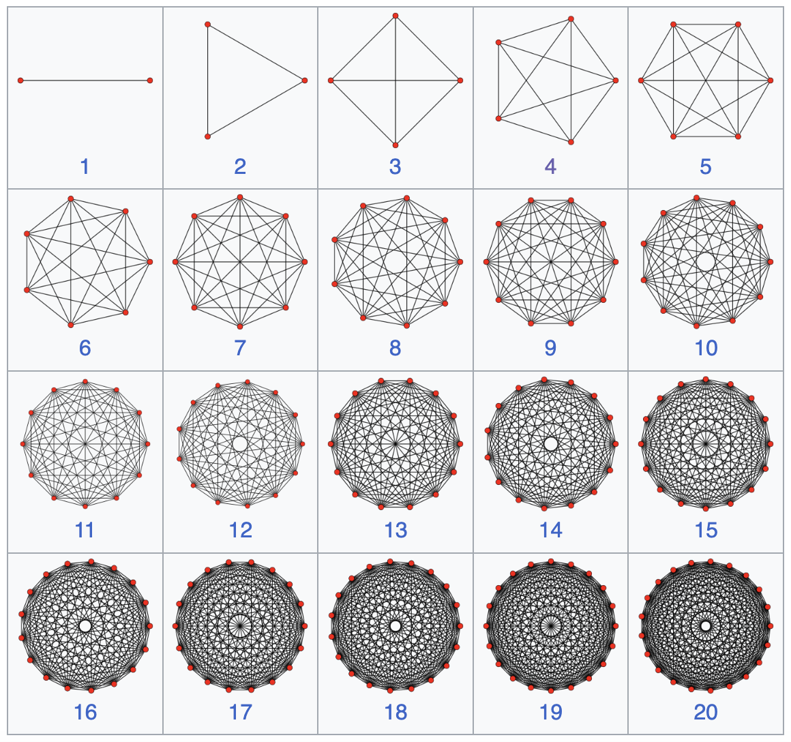
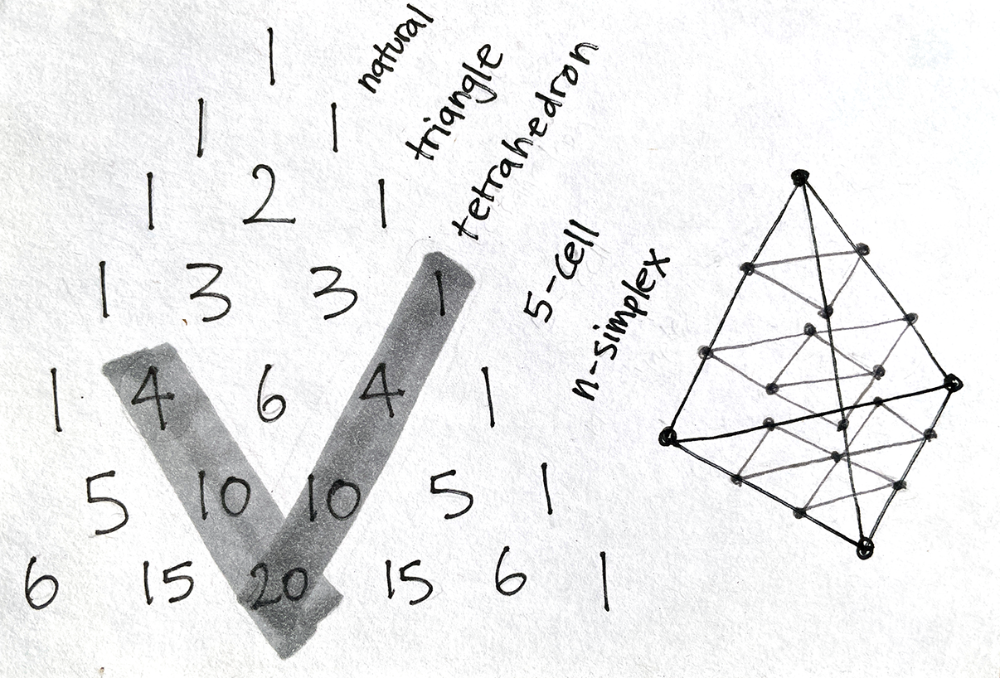
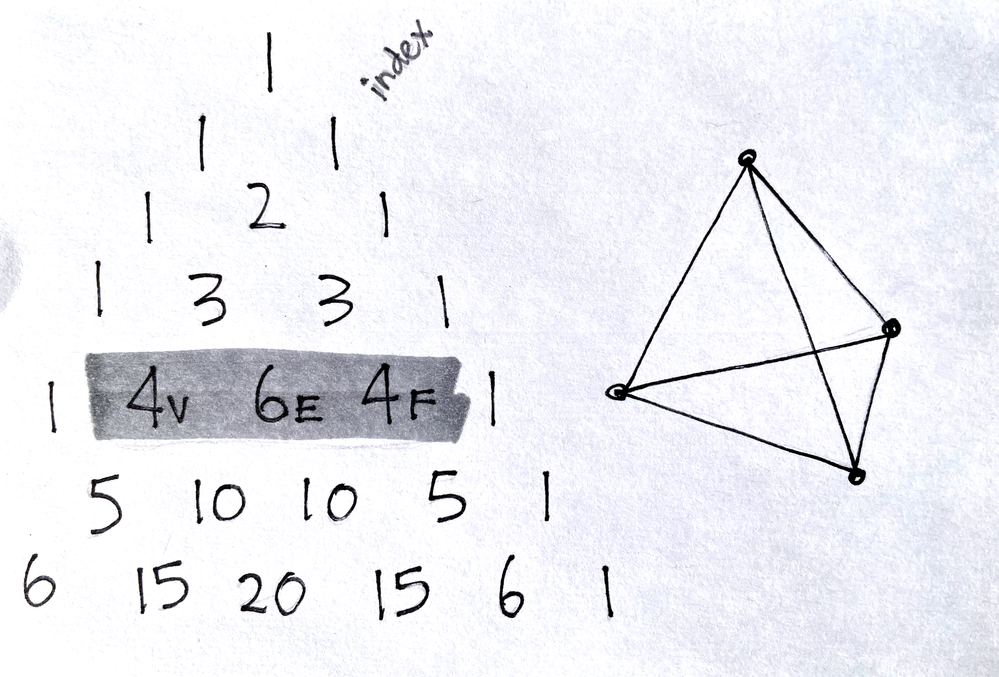
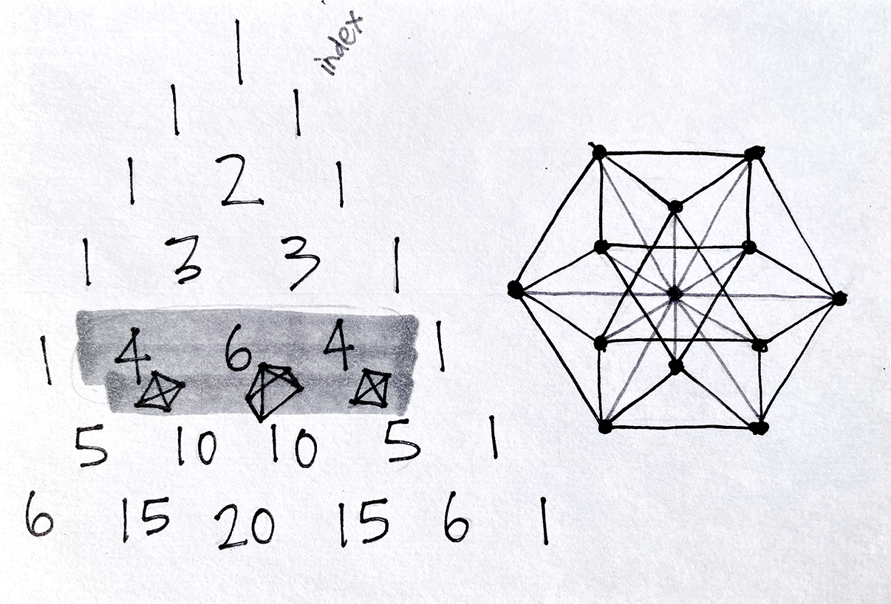

the family of triangles upto 20 dimensions

simplex numbers in the arithmetic triangle
|
remove a point |
5-dimensional space
|
add a point |
|
 the family of triangles upto 20 dimensions |
simplex numbers in the arithmetic triangle |
|
what is a 4D circle? ⬋ |
a 4-simplex describes spacetime ⬇ |
what is the normal distribution? ⬊ |
The simplex family is the generalization of the triangle in all spatial dimensions.
These are the simplest shapes (polytopes) possible,
which comprise of the fewest components in any given dimension.
Each simplex is also structurally rigid in each dimension.
|
 The arithmetic triangle enumerates the points on the lattice of each n-simplex. |
 It describes the elements of each n-simplex |
 It also describes the vertex figures of each simplicial lattice. |

the arithmetic triangle to 30 iterations. growing exponentially, each row approaches the normal distribution.